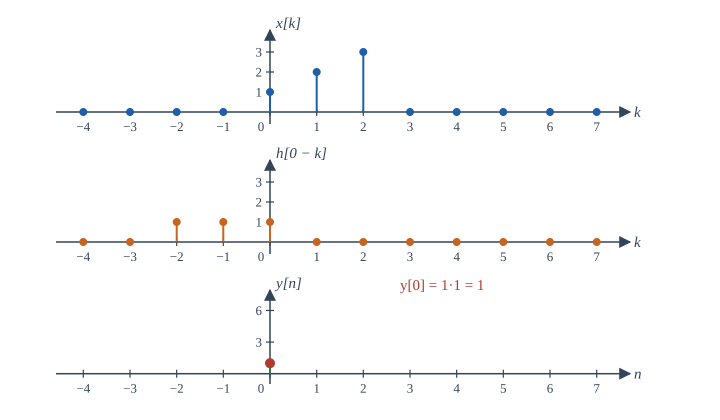
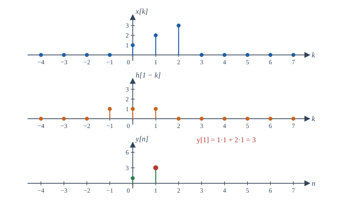
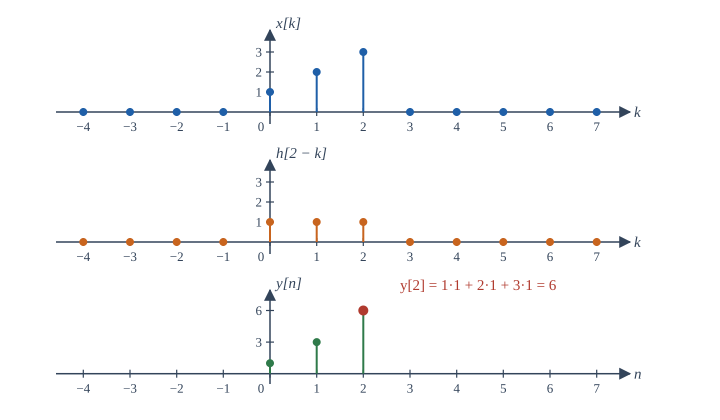
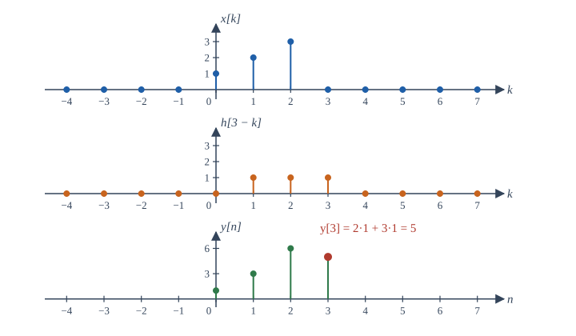
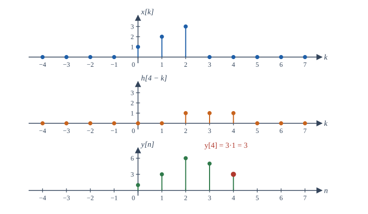
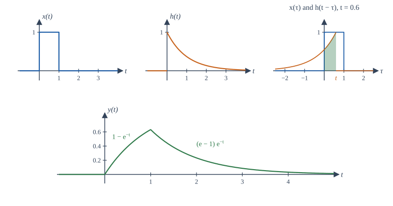

Chapter 4: LTI Systems and Convolution¶
How the impulse response determines everything, in discrete and continuous time
Learning outcomes
After this chapter you should be able to:
- derive the convolution sum and the convolution integral from linearity and time invariance;
- compute convolutions of finite sequences by table, of closed-form signals by direct summation or integration, and of any signals by the flip-and-slide method;
- use the commutative, associative and distributive properties to simplify interconnections of LTI systems;
- read memory, causality, stability and invertibility of an LTI system directly from its impulse response;
- relate the step response to the impulse response, and explain why complex exponentials are eigenfunctions of LTI systems.
4.1 The idea: one response tells all¶
Chapter 3 introduced linearity and time invariance separately. Together they have a remarkable consequence: if we know how an LTI system responds to a single impulse, we can compute its response to any input. The response to the unit impulse is called the impulse response, written \(h[n]\) in discrete time and \(h(t)\) in continuous time:
The argument has three steps, and it is the same in both domains. First, write the input as a sum of shifted, scaled impulses. Second, use time invariance: each shifted impulse produces a shifted copy of \(h\). Third, use linearity: the scaled sum of impulses produces the same scaled sum of shifted impulse responses. The result is an operation called convolution. This chapter derives it, shows how to compute it, and draws out its consequences.
4.2 The convolution sum¶
Chapter 2 showed that every sequence is a weighted sum of shifted impulses:
Read this as a recipe: at each position \(k\) there is an impulse \(\delta[n-k]\) with weight \(x[k]\). Now pass it through an LTI system.
- By time invariance, the input \(\delta[n - k]\) produces \(h[n - k]\).
- By homogeneity, the input \(x[k]\,\delta[n - k]\) produces \(x[k]\,h[n - k]\) (the weight \(x[k]\) is just a number).
- By additivity, the sum of all these inputs produces the sum of all these outputs.
Therefore
This is the convolution sum, and the star denotes convolution (not multiplication). The output at time \(n\) is a weighted sum of input samples, and the weight given to the input at time \(k\) is \(h[n - k]\): the impulse response evaluated at the time elapsed since \(k\). A system with a long impulse response "remembers" inputs from long ago.
Key idea
An LTI system is completely characterised by its impulse response. Once \(h\) is known, the output for any input is \(y = x * h\).
4.3 Computing the convolution sum¶
There are three practical methods. Choose by the form of the signals.
Method 1: a table for finite sequences¶
When \(x\) and \(h\) are short lists, write the output as a sum of shifted copies of \(h\), one for each input sample, and add the columns. Let \(x[n] = \{1, 2, 3\}\) and \(h[n] = \{1, 1, 1\}\), both starting at \(n = 0\).
| \(n = 0\) | 1 | 2 | 3 | 4 | |
|---|---|---|---|---|---|
| \(x[0]\,h[n] = 1\cdot h[n]\) | 1 | 1 | 1 | ||
| \(x[1]\,h[n-1] = 2\cdot h[n-1]\) | 2 | 2 | 2 | ||
| \(x[2]\,h[n-2] = 3\cdot h[n-2]\) | 3 | 3 | 3 | ||
| \(y[n]\) | 1 | 3 | 6 | 5 | 3 |
Table 4.1. Convolution of two finite sequences by adding shifted copies of h.
The procedure is exactly the multiplication of polynomials: \((1 + 2z + 3z^2)(1 + z + z^2) = 1 + 3z + 6z^2 + 5z^3 + 3z^4\). Two facts follow. If \(x\) has \(N_x\) samples starting at \(n_1\) and \(h\) has \(N_h\) samples starting at \(n_2\), then \(y\) has \(N_x + N_h - 1\) samples starting at \(n_1 + n_2\). And the sum of the output samples is the product of the input sums: here \(18 = 6 \times 3\).
Method 2: flip and slide¶
To compute one output sample \(y[n]\) directly from the formula, think of \(h[n - k]\) as a function of \(k\). It is \(h[k]\) flipped (reflected to \(h[-k]\)) and then slid to the right by \(n\). Multiply it, sample by sample, with \(x[k]\) and add up the products. Then increase \(n\) by one, slide the flipped sequence one step further, and repeat. The step-through figure below does this for the sequences of Table 4.1.

1n = 0. Only x[0] overlaps the flipped h, so y[0] = 1.

2n = 1. Two samples overlap: y[1] = 1 + 2 = 3.

3n = 2. Full overlap: y[2] = 1 + 2 + 3 = 6.

4n = 3. The flipped h starts to leave x: y[3] = 2 + 3 = 5.

5n = 4. Only x[2] overlaps: y[4] = 3. For n ≥ 5 there is no overlap and y[n] = 0.
Flip and slide is the method to use when the signals are given by sketches or when you need to know where the output is non-zero. The overlap picture also explains the length rule: the output is non-zero from the first moment of overlap to the last.
Method 3: direct summation for closed forms¶
When the signals are given by formulas, substitute them into the sum, use the steps to fix the limits, and sum a geometric series.
Example 4.1 Exponential convolved with a step
Find \(y[n] = a^n u[n] * u[n]\) for \(|a| \ne 1\).
The factor \(u[k]\) is zero for \(k < 0\); the factor \(u[n - k]\) is zero for \(k > n\). So for \(n < 0\) every term vanishes and \(y[n] = 0\). For \(n \ge 0\) the sum runs from \(k = 0\) to \(k = n\):
So \(y[n] = \dfrac{1 - a^{n+1}}{1 - a}\,u[n]\). With \(a = 0.5\) the output climbs \(1, 1.5, 1.75, 1.875, \ldots\) towards 2, which is the step response found by iteration in Exercise 3.8. That is no coincidence: \((0.5)^n u[n]\) is the impulse response of \(y[n] = x[n] + 0.5y[n-1]\), and convolving it with \(u[n]\) gives the response to a step.
Example 4.2 Two exponentials
Find \(y[n] = a^n u[n] * b^n u[n]\) with \(a \ne b\).
For \(n \ge 0\),
So \(y[n] = \dfrac{a^{n+1} - b^{n+1}}{a - b}\,u[n]\). Check \(n = 0\): \(y[0] = 1\), which is \(a^0b^0\). Check \(n = 1\): \(y[1] = a + b\), which is \(x[0]h[1] + x[1]h[0]\).
4.4 The convolution integral¶
The continuous-time argument mirrors the discrete one. The sifting property of Chapter 2 lets us write any signal as a "sum" (an integral) of shifted impulses:
An impulse at time \(\tau\) produces \(h(t - \tau)\) by time invariance. Its weight is \(x(\tau)\,d\tau\). Linearity lets us add (integrate) the responses:
This is the convolution integral. The graphical meaning is the same as before: flip \(h(\tau)\) to \(h(-\tau)\), slide it right by \(t\) to get \(h(t - \tau)\), multiply by \(x(\tau)\), and take the area of the product. The area depends on \(t\), and it is the output \(y(t)\).
Working an integral step by step¶
The skill is in finding the limits. Because the signals usually switch on and off, the product \(x(\tau)h(t - \tau)\) is non-zero only on an interval whose ends depend on \(t\), and the form of the integral changes as \(t\) crosses certain values. Sketch first, then integrate on each range.

Example 4.3 A pulse into a first-order system
Let \(x(t) = u(t) - u(t - 1)\) (a unit pulse lasting one second) and \(h(t) = e^{-t}u(t)\) (the impulse response of an RC circuit with \(RC = 1\)). Find \(y = x * h\).
As a function of \(\tau\), \(x(\tau)\) is 1 on \([0, 1)\). The flipped, shifted response \(h(t - \tau) = e^{-(t - \tau)}\) is non-zero for \(\tau < t\): it ends at \(\tau = t\) and trails off to the left. There are three cases.
\(t < 0\). The flipped response lies entirely left of the pulse. No overlap: \(y(t) = 0\).
\(0 \le t < 1\). Overlap on \(0 \le \tau \le t\) (shaded in Figure 4.2):
\(t \ge 1\). Overlap on the whole pulse, \(0 \le \tau < 1\):
The two pieces agree at \(t = 1\), where both equal \(1 - e^{-1} \approx 0.632\), as they must for a continuous output. Physically, the capacitor charges towards 1 while the pulse is on, reaching 63% of the way, and then discharges.
Five checks for a convolution
(1) The output starts at the sum of the start times and ends at the sum of the end times. (2) The pieces join continuously unless one signal contains an impulse. (3) The area of \(y\) is the product of the areas of \(x\) and \(h\). (4) For a causal \(h\), \(y\) cannot start before \(x\). (5) The answer has the right units: an integral over \(\tau\) adds a factor of time.
Check (3) on Example 4.3: the area of \(x\) is 1, the area of \(h\) is \(\int_0^\infty e^{-t}dt = 1\), and the area of \(y\) is \(\int_0^1(1 - e^{-t})dt + \int_1^\infty(e - 1)e^{-t}dt = e^{-1} + (e - 1)e^{-1} = 1\). It agrees.
4.5 Properties of convolution¶
Convolution behaves like multiplication in several ways. Each property below holds in both domains; we write them for continuous time.
| Property | Statement | Meaning for systems |
|---|---|---|
| Commutative | \(x * h = h * x\) | input and impulse response are interchangeable |
| Associative | \((x * h_1) * h_2 = x * (h_1 * h_2)\) | a cascade has impulse response \(h_1 * h_2\) |
| Distributive | \(x * (h_1 + h_2) = x * h_1 + x * h_2\) | a parallel connection has impulse response \(h_1 + h_2\) |
| Identity | \(x * \delta = x\) | the identity system has \(h = \delta\) |
| Shift | \(x(t) * \delta(t - t_0) = x(t - t_0)\) | the ideal delay has \(h = \delta(t - t_0)\) |
| Shift of both | if \(y = x * h\) then \(x(t - t_1) * h(t - t_2) = y(t - t_1 - t_2)\) | delays add |
| Derivative | \(\frac{d}{dt}(x * h) = \frac{dx}{dt} * h = x * \frac{dh}{dt}\) |
Table 4.2. Properties of convolution.
The commutative property follows from the substitution \(\sigma = t - \tau\) in the integral. Its practical meaning is surprising: the order of LTI systems in a cascade does not matter, because \(h_1 * h_2 = h_2 * h_1\). An equaliser followed by an amplifier gives the same output as the amplifier followed by the equaliser, provided both are linear and time-invariant. (Real amplifiers clip, which is nonlinear; then the order does matter.)
The associative and distributive properties let us reduce any network of LTI systems without feedback to a single equivalent impulse response. Feedback networks are easier to reduce in the transform domain, as Chapter 10 shows.
Example 4.4 Reducing an interconnection
A system consists of \(h_1[n] = \delta[n] - \delta[n-1]\) in cascade with \(h_2[n] = u[n]\). What is the overall impulse response?
\(h[n] = h_1 * h_2 = u[n] - u[n-1] = \delta[n]\). The cascade is the identity: the first difference undoes the accumulator. This confirms that the two are inverse systems.
4.6 Reading system properties from the impulse response¶
For an LTI system, every property of Chapter 3 becomes a simple condition on \(h\).
Memory. An LTI system is memoryless if and only if \(h[n] = K\delta[n]\) (or \(h(t) = K\delta(t)\)). Then \(y = Kx\). Any other impulse response mixes in inputs from other times.
Causality. An LTI system is causal if and only if
The reason: \(y[n] = \sum_k h[k]x[n-k]\), and a non-zero \(h[k]\) with \(k < 0\) would make \(y[n]\) depend on the future input \(x[n - k]\). For a causal system the sum runs only over \(k \ge 0\): \(y[n] = \sum_{k=0}^{\infty}h[k]\,x[n-k]\).
Stability. An LTI system is BIBO stable if and only if its impulse response is absolutely summable (or absolutely integrable):
Proof of sufficiency. If \(|x[n]| \le B\) for all \(n\), then
which is finite. Proof of necessity. If \(\sum|h[k]|\) is infinite, choose the bounded input \(x[n] = \mathrm{sgn}(h[-n])\) (that is, \(\pm1\) with the sign of \(h[-n]\), and 0 where \(h[-n] = 0\)). Then \(y[0] = \sum_k h[k]\,\mathrm{sgn}(h[k]) = \sum_k|h[k]|\), which is infinite. So the system is unstable.
Invertibility. An LTI system with impulse response \(h\) has an LTI inverse with impulse response \(h_{\text{inv}}\) if and only if
Example 4.5 Properties from h
(a) \(h[n] = (0.9)^n u[n]\): causal (\(h = 0\) for \(n < 0\)); stable (\(\sum 0.9^n = 10\)); has memory.
(b) \(h[n] = 2^n u[-n]\): not causal (non-zero for negative \(n\)); stable, because \(\sum_{n=-\infty}^{0}2^n = \sum_{m=0}^{\infty}2^{-m} = 2\).
(c) \(h(t) = u(t)\), the integrator: causal, but \(\int_0^\infty 1\,dt\) is infinite, so unstable (as Example 3.1 found by another route).
(d) \(h(t) = e^{-2|t|}\): not causal; stable, with \(\int|h| = 1\).
(e) \(h(t) = \delta(t - 3)\): a pure delay; causal, stable, has memory, and invertible (the inverse \(\delta(t + 3)\) is an advance, which is not causal).
4.7 The step response¶
The response of an LTI system to a unit step is its step response \(s\). Since \(u = u * \delta\), the step response is the convolution of \(u\) with \(h\):
The step response is the running sum (or integral) of the impulse response; conversely
The step response is often easier to measure in the laboratory than the impulse response, because a step (switching something on) is easier to produce than a very short, very strong pulse. Differentiating the measured step response then gives \(h\). For the RC circuit with \(h(t) = \frac{1}{RC}e^{-t/RC}u(t)\), the step response is \(s(t) = (1 - e^{-t/RC})u(t)\), the familiar charging curve.
4.8 Complex exponentials are eigenfunctions¶
One more consequence of convolution sets up the second half of the book. Feed the complex exponential \(x(t) = e^{st}\) into an LTI system:
where \(H(s) = \int h(\tau)e^{-s\tau}d\tau\), provided the integral converges. The output is the same exponential, multiplied by a complex constant. A signal that passes through a system unchanged in shape, merely scaled, is called an eigenfunction of the system, and the scale factor \(H(s)\) is its eigenvalue. In discrete time the same calculation with \(x[n] = z^n\) gives \(y[n] = H(z)\,z^n\) with \(H(z) = \sum_k h[k]z^{-k}\).
This is the reason complex exponentials dominate the theory. If we can write an input as a sum of complex exponentials, each passes through the system multiplied by its own \(H\), and the output is the sum of the scaled exponentials. Convolution, a hard operation, becomes multiplication, an easy one. With \(s = j\omega\) the factor \(H(j\omega)\) is the frequency response; writing signals as sums of \(e^{j\omega t}\) is Fourier analysis (Chapters 5 to 8); allowing general \(s\) and \(z\) gives the Laplace and z-transforms (Chapters 10 and 11).
Example 4.6 An eigenvalue
For \(h(t) = e^{-t}u(t)\), find the output for \(x(t) = e^{j t}\).
\(H(s) = \int_0^\infty e^{-\tau}e^{-s\tau}d\tau = \dfrac{1}{s + 1}\) for \(\mathrm{Re}\{s\} > -1\). At \(s = j\), \(H(j) = \dfrac{1}{1 + j} = \dfrac{1}{\sqrt{2}}e^{-j\pi/4}\). So \(y(t) = \dfrac{1}{\sqrt2}e^{j(t - \pi/4)}\): the same frequency, amplitude reduced by \(\sqrt{2}\), phase delayed by \(45°\). Taking real parts, the input \(\cos t\) produces \(\frac{1}{\sqrt2}\cos(t - \pi/4)\).
4.9 Convolution in NumPy¶
np.convolve computes the convolution of two finite arrays. It does not know where the sequences start, so you must keep track of the starting index yourself: the output starts at the sum of the two starting indices. For continuous-time signals, sampling both at a small step \(\Delta t\) and multiplying the discrete convolution by \(\Delta t\) approximates the integral by a Riemann sum.
import numpy as np
# Finite sequences: the convolution sum is polynomial multiplication
x = np.array([1, 2, 3]) # x[0], x[1], x[2]
h = np.array([1, 1, 1]) # h[0], h[1], h[2]
print("x * h =", np.convolve(x, h))
# a^n u[n] convolved with u[n]: compare with the closed form
a = 0.5
n = np.arange(8)
y = np.convolve(a ** n, np.ones(8))[:8] # first 8 samples are exact
closed = (1 - a ** (n + 1)) / (1 - a)
print("numerical =", np.round(y, 4))
print("closed form =", np.round(closed, 4))
# Continuous time: pulse of width 1 convolved with exp(-t)u(t), by a Riemann sum
dt = 1e-3
t = np.arange(0, 5, dt)
xc = ((t >= 0) & (t < 1)).astype(float)
hc = np.exp(-t)
yc = np.convolve(xc, hc)[:len(t)] * dt
exact = np.where(t < 1, 1 - np.exp(-t), (np.e - 1) * np.exp(-t))
print("y(0.5), y(2) =", np.round(yc[[500, 2000]], 4), " exact:", np.round(exact[[500, 2000]], 4))
print("largest error:", f"{np.max(np.abs(yc - exact)):.1e}")
x * h = [1 3 6 5 3]
numerical = [1. 1.5 1.75 1.875 1.9375 1.9688 1.9844 1.9922]
closed form = [1. 1.5 1.75 1.875 1.9375 1.9688 1.9844 1.9922]
y(0.5), y(2) = [0.3943 0.2324] exact: [0.3935 0.2325]
largest error: 1.0e-03
Two details deserve comment. Truncating \(a^n u[n]\) and \(u[n]\) to 8 samples does not spoil the first 8 output samples, because \(y[n]\) for \(n < 8\) uses only \(x[k]\) and \(h[k]\) with \(k \le n\). And the Riemann-sum error of about \(10^{-3}\) is of the order of the step \(\Delta t\), as expected for a rectangle rule; a smaller step gives a smaller error.
4.10 Summary¶
Summary
- An LTI system is characterised by its impulse response. The output is the convolution of the input with it: \(y[n] = \sum_k x[k]h[n-k]\) and \(y(t) = \int x(\tau)h(t-\tau)\,d\tau\).
- Compute convolutions by a table of shifted copies (finite sequences), by direct summation with geometric series (closed forms), or by flipping and sliding (sketches). Fix the limits of the integral case by case.
- Convolution is commutative, associative and distributive, with \(\delta\) as identity. Cascades convolve impulse responses, parallel connections add them, and the order of a cascade of LTI systems does not matter.
- An LTI system is memoryless iff \(h = K\delta\); causal iff \(h = 0\) for negative time; BIBO stable iff \(h\) is absolutely summable or integrable; invertible iff some \(h_{\text{inv}}\) gives \(h * h_{\text{inv}} = \delta\).
- The step response is the running integral of the impulse response.
- Complex exponentials \(e^{st}\) and \(z^n\) are eigenfunctions of LTI systems: they come out scaled by \(H(s)\) or \(H(z)\). This is the doorway to the frequency domain.
4.11 Exercises¶
Exercise 4.1
Convolve \(x[n] = \{2, -1, 1\}\) (starting at \(n = 0\)) with \(h[n] = \{1, 3\}\) (starting at \(n = -1\)).
Answer
Polynomial product: \((2 - z + z^2)(1 + 3z) = 2 + 5z - 2z^2 + 3z^3\). The output starts at \(0 + (-1) = -1\), so \(y[-1] = 2\), \(y[0] = 5\), \(y[1] = -2\), \(y[2] = 3\).
Exercise 4.2
Find \(y[n] = u[n] * u[n]\).
Answer
For \(n \ge 0\), \(y[n] = \sum_{k=0}^{n}1 = n + 1\). So \(y[n] = (n+1)u[n]\), a ramp starting at 1.
Exercise 4.3
Find \(y[n] = (0.5)^n u[n] * (0.25)^n u[n]\) and give \(y[2]\).
Answer
By Example 4.2, \(y[n] = \dfrac{0.5^{n+1} - 0.25^{n+1}}{0.25}u[n] = (2\cdot0.5^{n} - 0.25^{n})u[n]\). Then \(y[2] = 0.5 - 0.0625 = 0.4375\). Directly: \(1\cdot0.0625 + 0.5\cdot0.25 + 0.25\cdot1 = 0.4375\).
Exercise 4.4
Show that \(\mathrm{rect}(t) * \mathrm{rect}(t)\) is the triangle \(\Lambda(t)\), equal to \(1 - |t|\) for \(|t| \le 1\) and 0 otherwise.
Answer
The two unit-width pulses overlap only for \(|t| < 1\). For \(-1 \le t \le 0\) the overlap runs from \(-\tfrac12\) to \(t + \tfrac12\), length \(1 + t\). For \(0 \le t \le 1\) it runs from \(t - \tfrac12\) to \(\tfrac12\), length \(1 - t\). So \(y(t) = 1 - |t|\) on \([-1, 1]\).
Exercise 4.5
Find \(y(t) = e^{-2t}u(t) * u(t)\).
Answer
For \(t > 0\), \(y(t) = \int_0^t e^{-2\tau}\,d\tau = \tfrac12(1 - e^{-2t})\). So \(y(t) = \tfrac12(1 - e^{-2t})u(t)\). (This is the step response of the system with \(h(t) = e^{-2t}u(t)\).)
Exercise 4.6
Find \(y(t) = e^{-t}u(t) * e^{-3t}u(t)\).
Answer
For \(t > 0\), \(y(t) = \int_0^t e^{-\tau}e^{-3(t-\tau)}d\tau = e^{-3t}\int_0^t e^{2\tau}d\tau = \tfrac12(e^{-t} - e^{-3t})\). So \(y(t) = \tfrac12(e^{-t} - e^{-3t})u(t)\).
Exercise 4.7
Is the system with \(h[n] = (1.1)^n u[n]\) stable? Is \(h[n] = (-0.5)^n u[n] + \delta[n+2]\) causal? stable?
Answer
The first is unstable: \(\sum 1.1^n\) diverges. The second is not causal (the impulse at \(n = -2\)) but is stable: \(\sum|h| = \sum 0.5^n + 1 = 3\).
Exercise 4.8
The step response of an LTI system is \(s(t) = (1 - e^{-5t})u(t)\). Find its impulse response.
Answer
\(h(t) = ds/dt = 5e^{-5t}u(t)\). (The derivative of \(u(t)\) multiplies \(1 - e^{-5t}\), which is zero at \(t = 0\), so no impulse appears.)
Exercise 4.9
Two LTI systems with \(h_1(t) = \delta(t - 1)\) and \(h_2(t) = e^{-t}u(t)\) are connected in parallel, and the combination is followed by \(h_3(t) = 2\delta(t)\). Find the overall impulse response.
Answer
\(h = (h_1 + h_2) * h_3 = 2\delta(t - 1) + 2e^{-t}u(t)\).
Exercise 4.10
For \(h[n] = \delta[n] + \delta[n-1]\), find the output for \(x[n] = e^{j\pi n/2}\), using the eigenfunction property.
Answer
\(H(z) = 1 + z^{-1}\); with \(z = e^{j\pi/2} = j\), \(H = 1 - j = \sqrt2 e^{-j\pi/4}\). So \(y[n] = \sqrt2\,e^{j(\pi n/2 - \pi/4)}\). Direct check: \(y[n] = e^{j\pi n/2} + e^{j\pi(n-1)/2} = e^{j\pi n/2}(1 - j)\).
4.12 Quiz¶
Check your understanding of Chapter 4
Exercise 1
x[n] has 5 non-zero samples and h[n] has 4. How many samples (at most) does x * h have?
Answer
8
N_x + N_h − 1 = 5 + 4 − 1 = 8.
Exercise 2
An LTI system is causal if and only if
- h(t) = 0 for t < 0
- h(t) is absolutely integrable
- h(t) = Kδ(t)
- h(t) is even
Answer
h(t) = 0 for t < 0
Exercise 3
The impulse response of a cascade of two LTI systems is
- h1 + h2
- h1 · h2
- h1 * h2
- h1 − h2
Answer
h1 * h2
Cascades convolve impulse responses; parallel connections add them.
Exercise 4
Which impulse response gives a BIBO stable system?
- u[n]
- 1.2ⁿ u[n]
- 0.7ⁿ u[n]
- n u[n]
Answer
0.7ⁿ u[n]
Only 0.7ⁿ u[n] is absolutely summable (sum = 1/0.3).
Exercise 5
The impulse response is the ___ of the step response with respect to time.
Answer
derivative
Exercise 6
Compute y[2] for {1, 2, 3} * {1, 1, 1}, both starting at n = 0.
Answer
6
Exercise 7
When e^(st) is the input to an LTI system, the output is
- H(s) e^(st)
- e^(st) * e^(st)
- a different exponential e^(−st)
- zero
Answer
H(s) e^(st)
Complex exponentials are eigenfunctions of LTI systems.